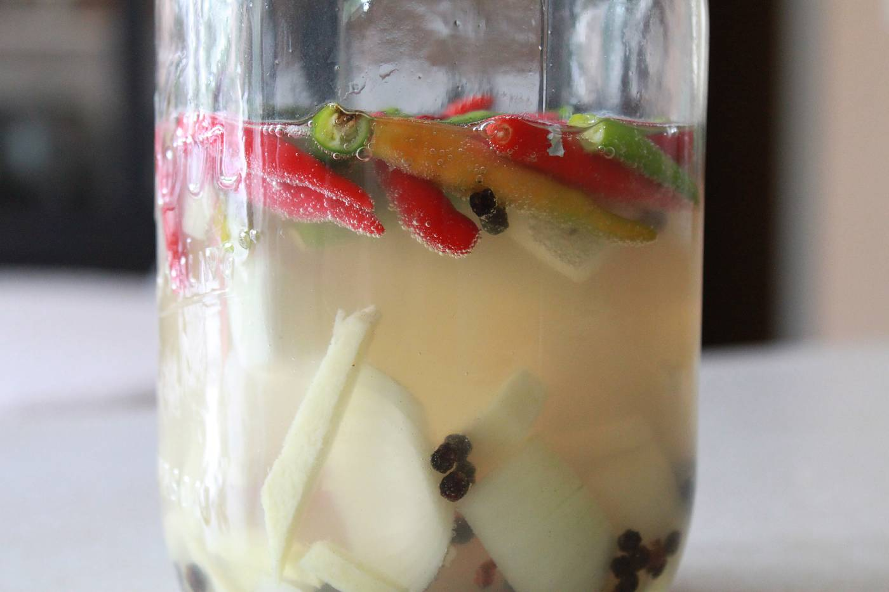

Sinamak or Filipino Spiced Vinegar

Sinamak is a filipino vinegar based dipping sauce.
Also known as Filipino Spiced Vinegar, is a sauce filipinos use to dip their foods, like chicken inasal
Ingredients
- 3 cups white vinegar or cane vinegar (Dati Puti found in Asian market)
- 15-20 whole Thai chilies, cleaned, thinly sliced
- 2 inch nub of ginger, cleaned, cut into coins
- 1 whole head of garlic, cloves only, sliced
- 1 tbsp whole black peppercorns
- 1 large clean jar or bottle
Steps
- Prepare all ingredients.
- Add everything to the container of your choice.
- Cover the container tightly and shake it well.
- Let mixture set on counter or refrigerator(NOT THE FREEZER) for 2-3 days.
- When ready to use, put pour a small amount to a serving dish or bowl.
- Dip your food into it and enjoy!